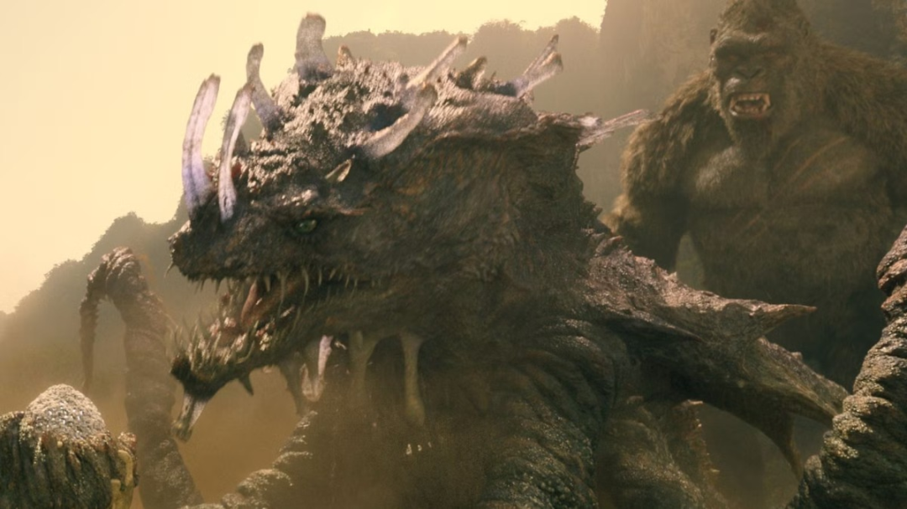
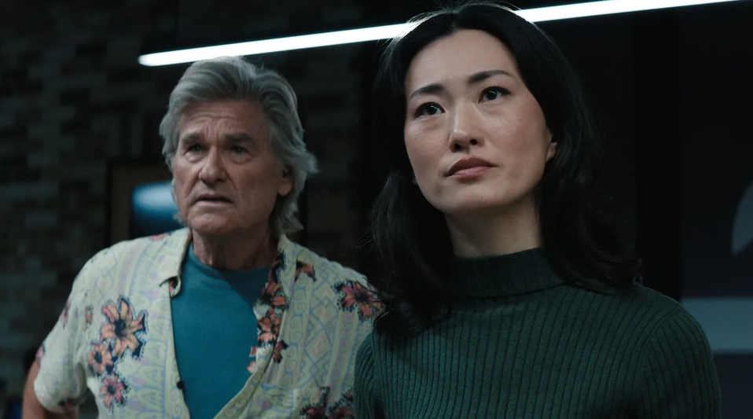

哥斯拉怪兽宇宙的王牌剧集，要迎来颠覆性大改动！

据《好莱坞报道者》等多家海外媒体爆料，Apple TV + 正在和传奇电视深度洽谈《帝王计划：怪兽遗产》第三季的制作事宜，但这绝非简单的续拍，而是一次创作层面的大洗牌。
爆料里最让怪兽粉兴奋的是这句话：第三季将引入怪兽宇宙（Monsterverse）中全新的泰坦巨兽。这一季如果真做，很可能不是原班创作思路的简单延续，而是要换一批编剧，甚至引入新的剧集主管，并且把新怪兽推到舞台中央。
有消息称，已经有多人被接触，商讨接手这部剧的可能性。不过目前还没有关于前两季角色是否会保留的明确说法。

其实，站在平台和制作方的角度，这个选择并不难理解。
怪兽宇宙的电影线已经进入需要新刺激的阶段，剧集如果继续沿着家族往事和阴影压迫的慢节奏拍下去，容易变成粉丝向的自传。而怪兽这个 IP 最保值的东西，从来不是人物关系，而是一只你从没见过的怪兽长什么样。把新怪兽放到前台，是最直接、也是最有效的吸引手段。
即便如此，衍生剧没有受到影响，怪兽宇宙还在扩张。
李·肖前传剧：怀亚特·拉塞尔回归演年轻版肖上校，设定在1984年冷战，任务是阻止苏联释放一头毁灭性的泰坦巨兽。
电影：《哥斯拉大战金刚：超新星》已定档 2027年3月26日北美上映。
最后泼一盆冷水：目前 Apple TV 和传奇影业都还没正式打算拍第三季，一切都还停留在洽谈阶段。即便真谈成了，从换主创到重新开发、开拍，回归荧屏恐怕还得等上好几年。
对怪兽宇宙的真爱粉来说，眼下能解馋的，还得是定档 2027 年的电影《哥斯拉大战金刚：超新星》。